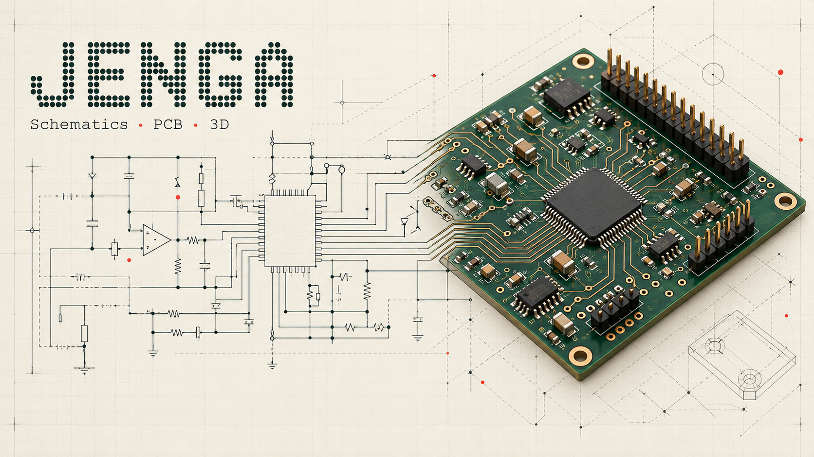

SCHEMATICS · PCB · 3D
Your next circuit starts here.
An open-source electronics workspace for people and external AI assistants. The complete Windows package includes its libraries and native backend—no separate KiCad installation required.
LATEST PUBLISHED WINDOWS BUILD
Checking availability…
Finding the newest public release. Drafts are never offered.
Published early-access builds may be selected. Read the release status and verify checksums before use.

Conceptual artwork, not an application screenshot or verified circuit.
One link, current installer
This page selects the highest published version, including early-access releases. It links directly to that release’s EXE. Older installers remain attached to their original releases.
Useful, still evolving
Jenga is early-access software. Keep backups and verify your designs. A successful export or attractive 3D model does not establish manufacturing readiness.